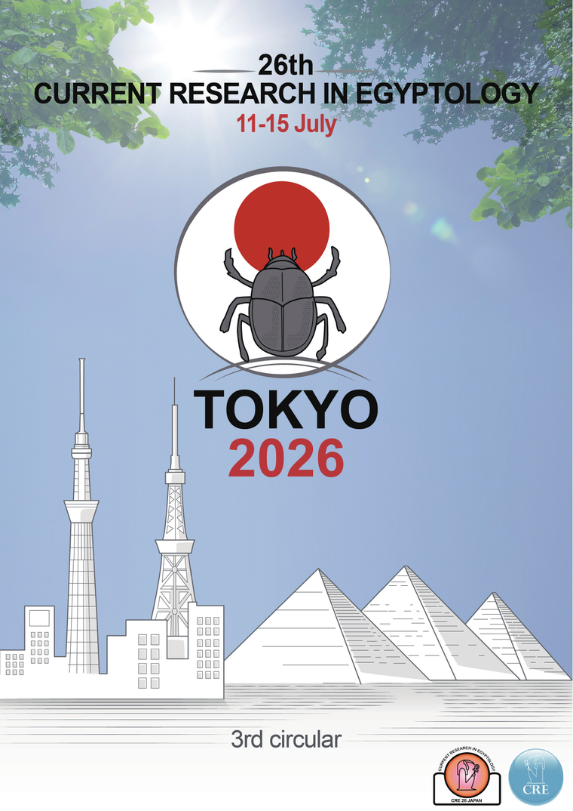

26th International Conference in Tokyo, Japan

Third Circular
The Third Circular presents the full preliminary programme — over 150 papers across three parallel sessions, short presentations, two poster sessions, and four keynote lectures — together with the museum tours, conference dinner, excursion, presentation formats, registration, immigration & visas, and accommodation details.
The full preliminary programme is now confirmed. Here are the highlights — the complete schedule is on the Program page and in the 3rd Circular.
Five days, three parallel sessions, and over 150 papers — including short presentations and two poster sessions. Explore the complete day-by-day schedule for Rooms A, B and C.
View the Programme →Keynotes by Dr Takuzo Onozuka (Tokyo National Museum), Dr Keiko Tazawa (Ancient Orient Museum), Prof Kyoko Yamahana (Tokai University), and Prof Tomoaki Nakano (Chubu University).
View the Programme →Guided tours to the Tokyo National Museum (Day 1) and the Ancient Orient Museum, Ikebukuro (Day 2). Both are included in the registration fee (transport not included).
Egyptian Collections →
Second Circular
Detailed information on the organising & scientific committees, venue, preliminary programme, presentation formats, museum visits, conference dinner, excursion, registration, immigration & visas, travel advice, and accommodation is now available.
Key practical information for participants: the confirmed venue, transport in Tokyo, the museum tour, and the post-conference excursion
We are pleased to announce that the conference venue has been officially confirmed as the Tokyo National Research Institute for Cultural Properties (東京文化財研究所, TOBUNKEN / 東文研), located in the Ueno cultural district. TOBUNKEN is Japan's foremost institute for the study, documentation, and conservation of cultural heritage, and offers an especially fitting setting for an international gathering dedicated to the material and textual heritage of ancient Egypt.
Venue & Access →Participants are strongly encouraged to obtain a SUICA IC card upon arrival. A single tap grants access to JR lines, Tokyo Metro, Toei Subway, and most buses, and the card can also be used at vending machines, convenience stores, and many shops. The 2nd Circular provides detailed guidance on how to acquire, recharge, and use SUICA (including mobile and Welcome SUICA options for international visitors).
SUICA Guide →On Sunday, 12 July 2026, participants are invited to a guided tour of the Ancient Orient Museum (古代オリエント博物館) in Ikebukuro, whose collection includes notable Egyptian, Mesopotamian, and Levantine material. Transfer from the conference venue begins at 17:30, with the tour itself scheduled from 19:00 to 19:30. Full logistics, including access and admission arrangements, are detailed in the 2nd Circular.
Egyptian Collections →The post-conference excursion will take place on Wednesday, 15 July 2026, with a chartered bus to Kamakura — Japan's medieval capital, renowned for its Zen temples and the Great Buddha (Daibutsu) — followed by a visit to the coastal island of Enoshima. Arrival in Kamakura is planned for approximately 10:30, with free time to explore the town. The participation fee is JPY 8,000 and is not included in the conference registration.
Registration Details →CRE 26 Tokyo is committed to the broadest possible international participation, including the attendance of colleagues from Egypt and other regions for whom conference travel represents a considerable financial burden. At present, fifteen researchers still require travel grants in order to present their work in Tokyo. Every contribution — through our ReadyFor crowdfunding campaign or via PayPal — directly supports their airfare, accommodation, and registration, and helps ensure that scholarship on ancient Egypt remains a genuinely global endeavour.

First Circular
Detailed information on the venue, museum visits, conference dinner, preliminary programme, presentation formats, registration fees, visa procedures, and the Kamakura excursion is now available.
Mark your calendar for these key milestones
Organizing Committee and Scientific Committee officially established. Call for Papers opens in early November.
Submit your research abstracts. Deadline for all submissions.
Presenter candidates selected by the Scientific Committee.
First Circular published.
Second Circular published with detailed program information.
Register early at the discounted rate of JPY 8,000.
Final registration period at JPY 10,000.
Five days of presentations, discussions, and networking with the global Egyptology community.
Selected papers invited for publication in the official conference proceedings.
The CRE Japan Committee is honored to host the Current Research in Egyptology conference in Tokyo for the first time. Join us for five days of groundbreaking research, cultural exchange, and collaboration in one of the world's most vibrant cities.
Whether you're presenting cutting-edge research, exploring new methodologies, or connecting with colleagues, CRE 26 Tokyo promises an unforgettable experience combining academic excellence with Japanese hospitality.
What to expect at CRE 26 Tokyo
Engage with renowned Egyptologists and emerging researchers from around the world, sharing the latest discoveries and methodologies.
Present your research covering all periods from Prehistoric to Islamic Egypt, including archaeology, philology, and digital humanities.
Network with colleagues from universities and institutions across Europe, North America, Asia, Africa, and beyond.
Explore Japan's exceptional Egyptian collections at major museums in Tokyo and surrounding areas.
Discover Tokyo's unique blend of traditional culture and modern innovation while attending the conference.
Participate in sessions connecting Egyptology with digital methods, conservation, and comparative studies.
Everything you need for CRE 26
Submit your research abstract covering Prehistoric to Islamic Period Egypt. Deadline: January 16, 2026.
Learn More →Register for the conference and secure your place at CRE 26 Tokyo. Early bird rates available.
Register →Find directions to the National Research Institute for Cultural Properties, Tokyo (TOBUNKEN).
View Venue →Discover major Egyptian collections in Tokyo and across Japan, from ancient artifacts to mummies.
Explore Collections →Find recommended hotels near the conference venue along the JR Yamanote Line and Tokyo Metro Marunouchi Line.
View Hotels →Help make CRE 26 accessible to researchers worldwide through our crowdfunding campaign.
Support CRE →Get in touch with the organizing committee